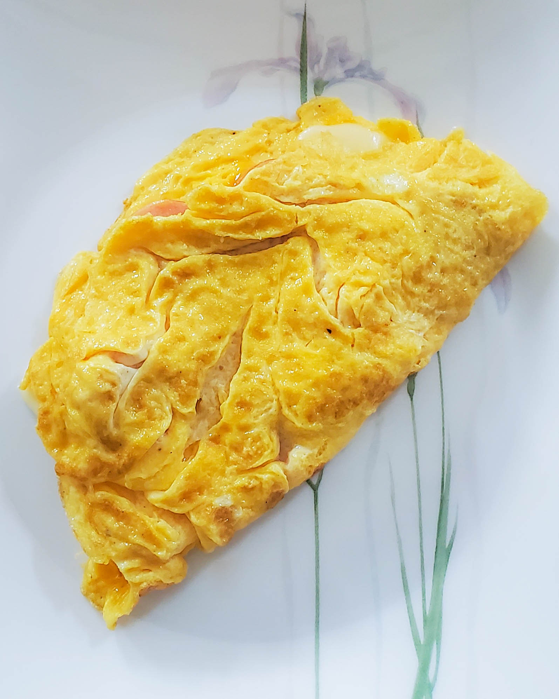

It's the middle of August, in the middle of quarantine. Since I'm gearing up for my first year of university, what better time than to learn how to cook? A couple days ago, I took up the daunting task of cooking both breakfast and dinner for the last few days. It's been quite interesting; with the help of my dad, I've learned to cook a lot of my favourite dishes, which is fantastic.

For breakfast on the first day, I made an omelette. Of the three attempts I had, only one turned out semi-successfully (pictured left). For each omelette, I used two eggs, sausage, and a sprinkle of mozarella. The eggs were the hardest part to cook, considering the filling didn't require any cooking. For my first omelette, the filling wasn't set properly, and so filling spilled out everywhere. For my second omelette, I had too much filling, and so again, the filling spilled everywhere. It wasn't until the third omelette when I had a good balance of filling and egg, and I managed to flip it well without totally ruining it.
I made eggs again on the second day, this time with a side of sausages. The sausages were frozen, so I boiled them. (Insert joke about sausage water). These were pretty tasty, but I just didn't have enough egg. I had a lot of egg-less sausage, which was tasty but it was too much.

For dinner, I fried some fish fillet. I've seen my brother and my dad fry foods before, but I never tried it myself. I think it came out alright. Tonight, I also cooked some green beans, which I love eating
I'm really glad I decided to practice cooking, and I'm going to continue for the next few weeks leading up to the start of school. I'm excited! On the other hand, hi! I'm Andy. This is my blog.